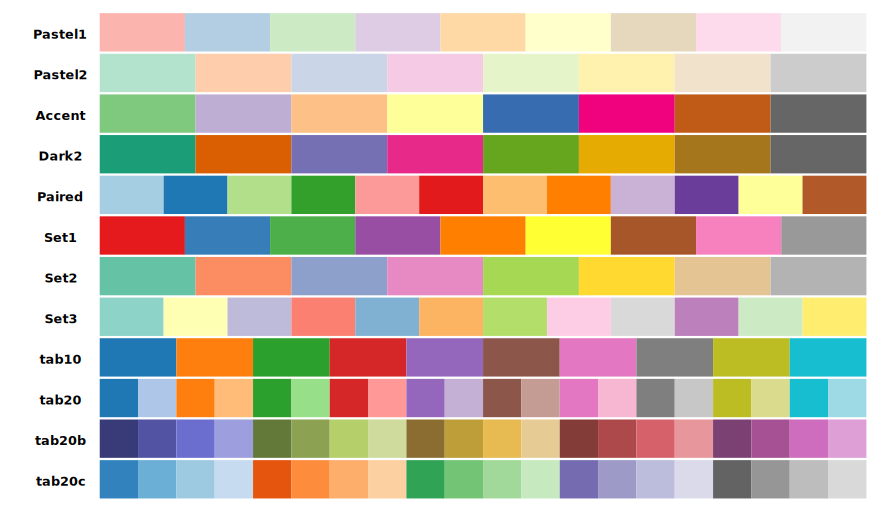
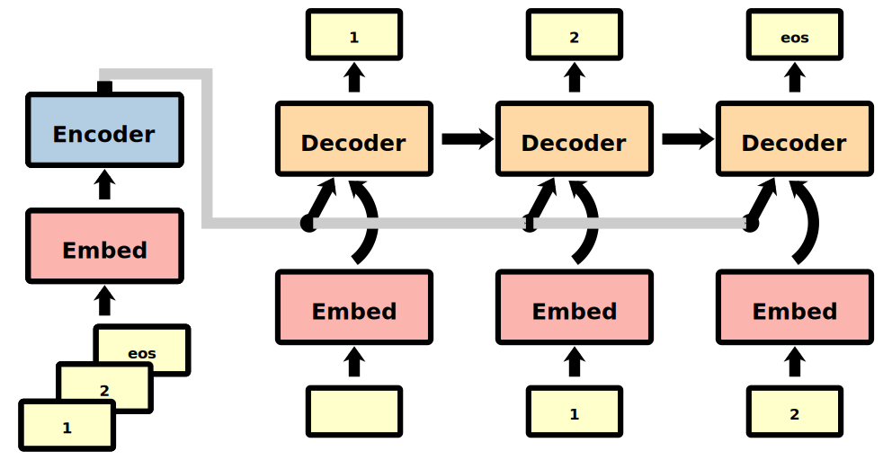
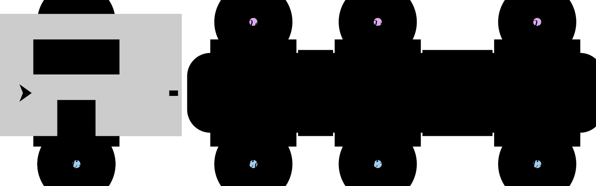
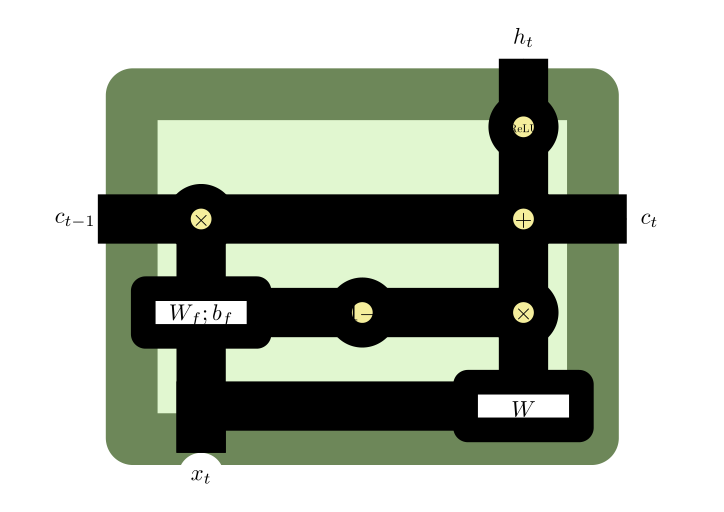
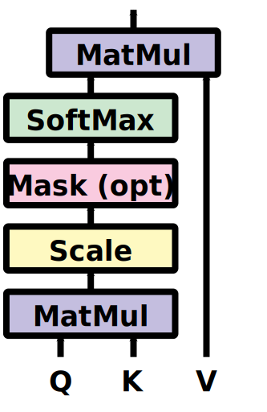
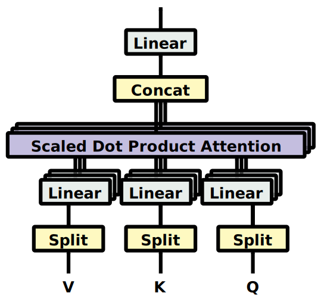
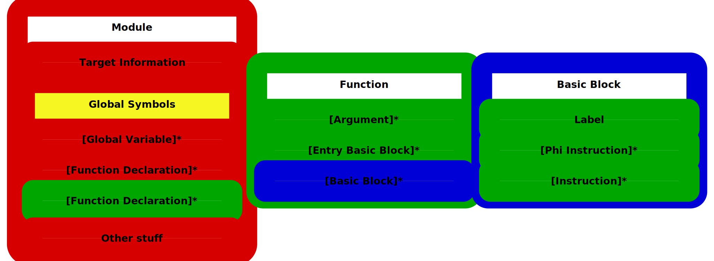
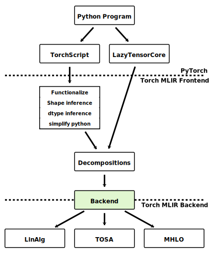

Over research spanning nearly 5+ years and programming spanning a decade, I’ve always remained curious and interested in diagrams. My interest, I think is mostly due to the fact that I’m a strong visual learner. It is very likely I have some learning impairment over audio, or that visual learning is, to me much easier and I want to short-circuit through that route. Consequently I find myself drawn to papers, articles or web-pages that illustrate an idea. See below for some illustrations I go wow over:
- Edward Yang: PyTorch Internals
- Simon Boehm: How to Optimize a CUDA Matmul Kernel for cuBLAS-like Performance: a Worklog
- Wikipedia: ELF Executable and Linkable Format
- Alexander Rush: The Annotated Transformer
- Alexander Rush: Minitorch series
- Christopher Olah:
- distill.pub
- Understanding LSTM Networks, and most of his blog.
- Hendrik Strobelt: Papers and demos.
- Julia Evans: Teach Tech with cartoons
{kind=link}
Converging on a set of tools to visualize things with the polished finish that I desire has been ongoing. Usually, making figures or diagrams are secondary to the main task in hand that generates revenue or reward. This is one reason I haven’t had allocated time or resources to improve this dimension in a while. Where these interest and skills I have and nurture best synergized in the past when I had to make diagrams for publications. I hope to revitalize, continue keeping these skills sharp and useful through posts here.
Toolbox
I have encountered and tried several tools over the years. To enumerate a few notable among these:
- Presentation Software: PowerPoint, Google Slides
- Drawing software: Xournal / Xournalpp
- Declarative:
- Embedding in web-pages: d3.js
- Vector Graphics:
Note that the above are different from plotting, for plotting I prefer matplotlib with some custom theming, d3.js for web-pages. Feel like trying Observable at some point of time.
What suits my usage?
It’s unlikely that there is a one size fits all choice. I bin my usages into four categories and explain the reasoning behind my choices below:
Whiteboarding Sometimes I just want to quick and dirty discuss a concept to a colleague or someone over call. The quality of the figure is not important - the legibility is. The more dimensions I can add (2D, 3D, color) and more primitives I have to work with (freehand pen/paper vs palette with shape primitives). I find Xournalpp most convenient here. To be honest any decent drawing application would do - Jamboard during google-meets, Whiteboard on Windows. What actually makes life easy here for me is a pen/canvas equivalent, and higher order primitives. I own a basic Wacom - Wacom CTL 472. An iPad + Pencil would be a decent addition, I think. But I already have a thin laptop and the tablet which suffices, so I never ended up splurging on the iPad. In real-life, at physical meetings a whiteboard with some colored marker pens I have often found convenient in the past.
Web, with animations I have used d3.js in the past and will find myself picking it up again should the need arises. Animation and dynamic user-interaction is an extra dimension to visualization. I have used the interactivity in the past to inspect translations better than I would be able to do manually on a text-file or pasting these over slides - see bleu-compare for an example. More d3 experiments are present in d3-sandbox, feel free to have a look. The diagrams for alignment manipulations is generated by code using d3.js, repurposed from a distill publication.
Publication Grade One downside of hand-drawings is that they don’t scale well. Vector Graphics however, does. And this is a good to have (I’d claim a necessity) to make polished diagrams. There is usually not much interactivity in diagrams that go on venues that accept papers. My strong preference here used to be inkscape. I have used presentation software for quick and okay before, but inkspace has a nice set of defaults, provides finer control. I am trying to replace this process with chalk, followed by manual refining with inkscape.
Programmatic Generation The above section discusses making static diagrams. Sometimes, this is not a luxury when the diagram is made from a lot of nodes (clusters, computation-graphs, call-graphs). Mostly because layouting can no longer be done manually, and manual command over everything no longer remains an advantage. When it comes to such tasks - I prefer GraphViz’s automatic layouting, or force layout from d3.js. These usually rarely go into papers, sometimes work for web-demos.
The rest of this post is me trying declarative drawing by a combination of chalk-diagrams and possible refinement through inkscape - trying to learn and practice my new preferred tooling.
chalk etudes
Inspired by pytudes, which in turn is inspired by Etudes for Programmers by Charles Wetherell, I’m going to set out to try and practice making diagrams. Bunch of them are for future blogposts here. Some just for fun to push the limits.
Colors
To get some good colors for the boxes which forms diagrams, I need some good color-sets. I’m going to pull it from matplotlib - mostly the qualitative sets. To verify that the color values pulled render properly, all I had to to do was hcat a few colors and vcat the sets.

The qualitative colors palette allows for this post to be a little more colorful than usual.
Translation
I have spent nearly 5 years working adjacent to machine translation. Find below a trip down memory lane touching a few concepts, also intended for a future blogpost.
Encoder Decoder Below is a more complex rendering via chalk of a sequence-to-sequence translation process diagram. Color palette pulled before helps make it look nicer, or so I claim.

There are repeating elements in this diagram - the decoding process. The code to generate this is a simple for-loop, which is one of the things I like about chalk over inkspace. I can loop to reuse repeating elements, and also control the spacing and positioning to a more exact degree. Usually working with presentation software or inkspace there are the following options that have to be used a lot:
- Align - Left, Right, Top, Bottom
- Distribute - Horizontally, Vertically.
Moving things around manually sometimes feel repetitive. I chalk, the control over positioning feels like an improvement.
RNNs There are nice illustrations of variants of RNN by Chris Olah, that I used to read. I found these very useful when getting started with deep-learning. Below I reproduce two.
The following denotes the time-series unroll of a recurrent neural network.

There are not many elements to loop over, but it’s noticable how this unroll can also be specified by a loop.
Simpler Simple Recurrent Units I’m not going to redo the existing RNN diagrams. Instead, I render a variant that does not probably have a diagram anywhere to be found online, but is used in models I have worked with for Bergamot Project. The equations are available in Kim et al. (2019).

Attention The landmark paper Attention is all you need paper (Vaswani et al. (2017)) has two or three nice diagrams. Find Scaled Dot Product Attention (SDPA) and MultiHead Attention (MHA) below, reproduced similar to the rendering in the paper.
 
The diagrams are not an exact match, but gets close surprisingly fast. I found adding depth (heads) and configuring same kind of elements together as a whole more convenient than how I would’ve done it in inkscape.
LLVM Module
I have been trying to read up on compilers space. Sometime back, while reading LLVM, watching videos and implementing parts of Kaleidoscope, the toy compiler, I went on a detour to experiment with a chalk-diagram for a slide I encountered from an LLVM Talk: 2019 EuroLLVM Developers’ Meeting: V. Bridgers & F. Piovezan “LLVM IR Tutorial - Phis, GEPs …”

Colors could’ve been better, but I did manage to render this fast, which got me hooked on chalk in the first place. Now that we’re here on a bigger blogpost, sharing the origin story seems nice.
Torch MLIR
I found this diagram while reading up on torch-mlir. Few more elements - dashed lines, aligned text on both sides. An attempt to replicate using chalk-diagrams got me as far as below:
{kind=link}

Concluding thoughts
For those who want to take a further dive - please find the source at jerinphilip/chalk-gallery. The source is not in the best of states - I’m learning a new library, so best-practices are still iterations away. Excuse the poor quality, I will not let perfect be the enemy of publishing. I will keep the etudes section of this post a live document, and update it with future rendering practices.
I think the Kolgomorov complexity for an output diagram like the ones above (which are created using repetition) will be minimal in a programming language - in this case, Python. It’s going to be better than SVG, and therefore using inkscape. The reasoning that follows is that I will be more productive and better equipped here in comparison to inkscape, once I get past the learning curve.
Expect more additions and cleanups to jerinphilip/chalk-gallery along with more posts in this blog coming ahead!
References
Imperative vs Declarative drawing API
Young Jin Kim, Marcin Junczys-Dowmunt, Hany Hassan Awadalla, Alham Fikri Aji, Kenneth Heafield, Roman Grundkiewicz, and Nikolay Bogoychev. 2019. From research to production and back: Ludicrously fast neural machine translation. In Proceedings of the 3rd workshop on neural generation and translation, pages 280–288.
Ashish Vaswani, Noam Shazeer, Niki Parmar, Jakob Uszkoreit, Llion Jones, Aidan N Gomez, Łukasz Kaiser, and Illia Polosukhin. 2017. Attention is all you need. In Advances in neural information processing systems, pages 5998–6008.